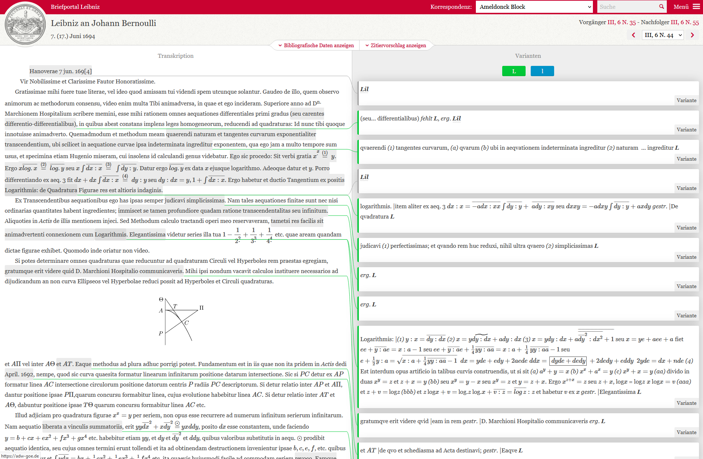
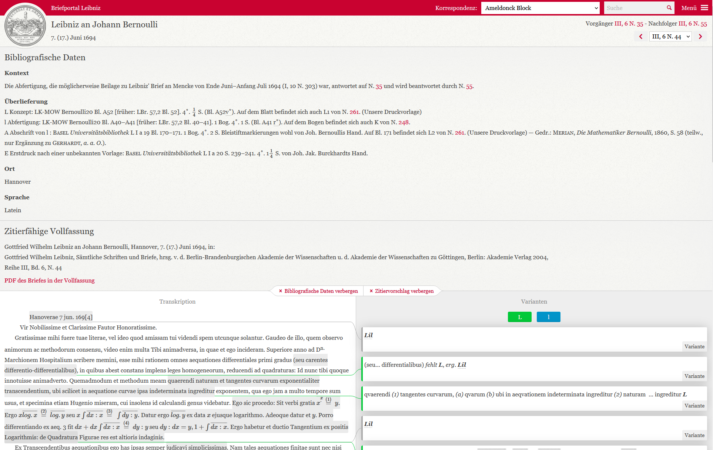

Briefportal Leibniz
Table of Contents
Abstract
The Briefportal Leibniz is a digital collection of selected letters from series III (Mathematischer, naturwissenschaftlicher und technischer Briefwechsel) of the ongoing critical print edition of Gottfried Wilhelm Leibniz’ works and letters, edited by the Academies of Sciences in Berlin and Göttingen. The main corpus of the selection, 157 letters, consists of Leibniz’ correspondence with Johann Bernoulli between 1693 and 1701 which centres mainly on mathematical matters. The portal offers a reader friendly chronological overview of these and several other correspondences but lacks some of the commentary and other material of the printed edition as well as download options for the underlying data. Despite these desiderata, the Briefportal Leibniz is still a promising part of the digital augmentation of the monumental Leibniz edition.
Einleitung
Die Akademie-Ausgabe der Schriften und Briefe des Universalgelehrten Gottfried Wilhelm Leibniz (1646–1716) stellt mit Sicherheit eines der umfangreichsten und langwierigsten Editionsprojekte in der deutschen Wissenschaftslandschaft dar. Mit acht Reihen und über 60 erschienenen Bänden, deren erster vor beinahe 100 Jahren veröffentlicht wurde,1 ist sie nicht nur ein Denkmal des Lebens und Denkens Leibniz’, sondern auch ein Monument der Editionsphilologie des Druckzeitalters. Sie ist als solches selbst ein Dokument der Wissenschaftsgeschichte, nicht nur in Bezug auf die Leibniz-Forschung oder die Geistes- und Wissensgeschichte der Frühen Neuzeit, sondern auch in Bezug auf die Entwicklungen der Editorik.2
Bereits früh wurde methodisch bewusst von den Editor:innen nicht nur der interne Gebrauch der EDV zur schnelleren und komfortableren, und damit finanziell günstigeren, Erarbeitung der gedruckten Edition eingeführt. Auch weitergehende Anwendungen und Nutzungsmöglichkeiten wurden angedacht.3 Dies führte wenigstens seit den letzten zwei Jahrzehnten zu einer Hybridisierung der Akademie-Ausgabe, in deren Rahmen viele Bände, sowohl abgeschlossen wie auch als Vorausedition, als PDF zum Download angeboten werden, ebenso wie die kumulierten Register, Konkordanzen zu den zahlreichen anderen Leibnizeditionen und anderes Zusatzmaterial.4 Hervorzuheben sind als durchaus eigenständige Forschungsinstrumente die Personen- und Korrespondenzdatenbank sowie der Arbeitskatalog der Edition.5 Hinzukommen Ansätze, Teile der Ausgabe digital bzw. hybrid zu edieren oder zumindest die zugrundeliegenden Daten zur Nachnutzung bereitzustellen.
Allerdings gehen die insgesamt vier Arbeitsstellen, die der Niedersächsischen Akademie der Wissenschaften zu Göttingen (Arbeitsstellen in Hannover und Münster) und der Berlin-Brandenburgischen Akademie der Wissenschaften (Arbeitsstellen in Berlin und Potsdam) unterstehen, hier recht unterschiedliche Wege. So konzipierte die Arbeitsstelle in Berlin die nachträglich eingerichtete Reihe VIII (Naturwissenschaftliche, technische und medizinische Schriften) von Beginn an als Hybridedition,6 wobei eine frühe HTML-Edition nur noch archiviert verfügbar ist.7 Nach wie vor werden dagegen neben den PDF-Dateien der Bände die zugrundeliegenden LaTeX- und die daraus generierten TEI/XML-Dateien als Forschungsdaten über ein GitHub-Repositorium zur Verfügung gestellt.8
Briefportal und Präsentation der edierten Texte
Demgegenüber hat die Arbeitsstelle in Hannover bzw. die Göttinger Akademie in Kooperation mit der SUB Göttingen 2016 eine reine HTML-Version veröffentlicht, das hier zu rezensierende Briefportal Leibniz. Es handelt sich hierbei dem eigenen Anspruch nach wohlgemerkt nicht um eine eigenständige digitale Edition, sondern eher um eine Textsammlung, die die Druckausgabe ergänzt. Dies gilt es bei der Bewertung zu berücksichtigen, wiewohl insbesondere die FAIR-Prinzipien, auf denen hier ein Hauptaugenmerk liegen wird, auch auf digitale Textsammlungen Anwendung finden sollten.
Als Textsammlung umfasste das Briefportal zunächst einen Teil des mathematischen Briefwechsels zwischen Leibniz und dem Basler Mathematiker Johann Bernoulli (1667–1748). Das Korpus von 150 Briefen wurde 2019 durch sieben Briefe zwischen Leibniz und Bernoulli sowie weniger umfangreiche Korrespondenzen aus Reihe III der Akademie-Ausgabe (Mathematischer, naturwissenschaftlicher und technischer Briefwechsel) ergänzt. Damit umfasst das Portal nach Rechnung des Rezensenten insgesamt 188 Briefe aus dem Zeitraum zwischen 1691 und 1701.9


Verhältnis zur Druckausgabe und Konzept
Dieses an sich leicht zu behebende Problem erscheint durchaus symptomatisch für das Verhältnis, das hier die gedruckte Edition und die digitale Textpräsentation eingehen. Grundsätzlich ist für jede hybride Publikation von einem gewissen Spannungsverhältnis auszugehen, das nicht nur auf den unterschiedlichen Zeitbegriff zu reduzieren ist, auf den bereits Nora Gädeke rekurrierte: „Editionen [sind] mindestens auf Jahrzehnte angelegt“, dagegen „steht der Computer, stehen seine Speichermedien, seine Software unter dem Zeichen der permanenten Erneuerung und der raschen Vergänglichkeit.“13 Vielmehr ergibt sich durch die unterschiedliche mediale Strukturierung und durch andere Funktionsweisen zwischen digitalen und nicht-digitalen Räumen eine Differenz, die sich nie gänzlich überbrücken lässt. Dadurch ermöglichen digitale und nicht-digitale Räume jeweils spezifische Rezeptionsweisen, verunmöglichen aber andere.14 Mit anderen Worten, die gedruckte, vielbändige Leibnizedition, wie sie im physischen Raum einer wissenschaftlichen Bibliothek konsultiert wird, wird immer anders wahrgenommen als die digitale Repräsentation derselben Texte im virtuellen Raum des Briefportals. Insofern können digitale Editionen oder Textsammlungen nie einen vollständigen Ersatz für gedruckte Editionen oder Quellensammlungen bieten, genauso wie keine Edition, selbst ein Faksimile, dasselbe Leseerlebnis bieten kann wie die zugrundeliegenden Quellen. Editionen bieten immer mehr – an Erschließung, Kontextualisierung und Interpretation – und zugleich weniger – an Authentizität und emotionaler Involviertheit – als die Originale und dies sollte auch für das Verhältnis von gedruckten und digitalen Editionen bzw. Textsammlungen gelten.
Unglücklicherweise bietet das Briefportal Leibniz vor allem weniger als die Druckausgabe, und dies nicht unbedingt mit Blick auf die Zahl der präsentierten Texte, was an sich unproblematisch ist. Problematisch ist, dass die ausgewählten Briefe nicht adäquat eingeordnet und erschlossen werden. Zumindest für das größte Briefkorpus der Auswahl, die Leibniz-Bernoulli-Korrespondenz, hätte sich eine Einleitung angeboten, die den Briefwechsel in seiner wissenschaftsgeschichtlichen Bedeutung würdigt – denn diese dürfte wohl das implizite Auswahlkriterium gewesen sein – und vor den mathematischen Debatten um 1700 einordnet.15 So ist es auch bedauerlich, dass zum Variantenapparat nicht ebenfalls der Sachkommentar, der unter anderem die in den Briefen erwähnten kleineren und größeren Schriften sowie die vorkommenden Personen identifiziert, für die HTML-Ausgabe berücksichtigt wurde. Dies lässt an die Anfangskonzeption der Akademie-Ausgabe denken, bei der zunächst Textbände herausgegeben wurden, denen später die textkritischen und inhaltlichen Kommentare gesondert folgen sollten.16 Immerhin hatten auch die frühen Textbände zumindest ein Personenregister, worüber das Briefportal leider nicht verfügt. Hierfür kann die Volltextsuche keinen wirklichen Ersatz bieten, berücksichtigt sie doch keine Namensvarianten oder die nicht-namentliche Nennung von Personen, Orten oder anderen Entitäten.
Indessen sollte das Briefportal nicht nur an der Druckausgabe gemessen werden, sondern an seinen eigenen Ansprüchen. Es soll den relativ kurzen Ausführungen auf der Startseite zufolge „ausgewählte Briefwechsel der Leibniz-Korrespondenz im Zusammenhang und ohne die chronologischen Einschnitte durch die Bandgrenzen der Akademie-Ausgabe in einer komfortablen und volltextdurchsuchbaren html-Version zugänglich machen“ und „eine flexible, elegante Durchsicht des Variantenapparates der Akademie-Ausgabe“ ermöglichen.17 Eine darüber hinaus gehende Erläuterung zum editorischen oder inhaltlichen Konzept gibt es nicht. Die Nutzer:innen bleiben letztlich, wie für die editorischen Zeichen und die meisten verwendeten Abkürzungen, auf die Einleitungen und Erläuterungen in den Druckbänden verwiesen, ohne dass dies aber expliziert wird. Auch zur technischen Umsetzung gibt es im Portal selbst keine Dokumentation, es fehlt sogar ein Hinweis auf das GitHub-Repositorium, in dem das durchaus gelungene Frontend ja zur Nachnutzung angeboten wird.18
Umsetzung der FAIR-Prinzipien
Der Mangel an Dokumentation und Nachlässigkeiten bei der Umsetzung machen sich leider auch im Hinblick auf die Anwendbarkeit der FAIR-Prinzipien auf das Briefportal Leibniz bemerkbar. Zwar ist die Sammlung sowohl als Ganzes wie auch in den einzelnen Texten gut auffindbar. Eine Suche mit Google oder vergleichbaren Suchmaschinen macht sie schnell zugänglich, zudem ist sie im Katalog digitaler Editionen von Patrick Sahle verzeichnet und bei correspSearch integriert.19 Doch werden bei correspSearch mehr Briefe angezeigt, als tatsächlich im Portal enthalten sind. Denn die CMI-Datei, die von correspSearch ausgewertet wird,20 enthält auch sechs Briefe von und an den Nürnberger Arzt Gottfried Thomasius (1660–1746) sowie zwei Briefe, die Leibniz mit Jakob Bernoulli (1655–1705), dem Bruder Johanns wechselte. Daher sind hier 197 Briefe statt der oben genannten 188 verzeichnet.21
Der Zugang zum Briefportal, d. h. zur Präsentationsschicht, ist unbeschränkt möglich, wiewohl die oben angesprochenen Anforderungen an sprachliche und gegebenenfalls mathematische Kompetenzen auf Seiten der Leser zu beachten sind. Alle Beitexte und die Menüführung sind deutschsprachig, ohne dass es englische oder andere Übersetzungen hierfür gibt. Wie erwähnt ist auch der Quellcode des Frontends über ein GitHub-Repositorium zugänglich und nachnutzbar, ebenso wie es ein Solr-API gibt.22 Allerdings finden sich weder auf das Repositorium noch das API Hinweise im Portal.
Das API liefert Daten im JSON-Format aus, die offenbar nach einem eigens entwickelten Datenmodell strukturiert sind. Eine Downloadmöglichkeit für die zugrundeliegenden Briefdaten in TeX oder im langzeitarchivierbaren Format TEI/XML wie im Fall der Reihe VIII gibt es leider nicht. Zumindest die Metadaten der Briefe sind aber über die oben erwähnte CMI-Datei in einem standardisierten Format verfügbar und somit ohne größere Probleme interoperabel, wie die Integration in correspSearch zeigt. Jedoch fehlt auch hier im Portal selber ein Hinweis auf diese Datei. Auch eine Dokumentation zur API oder zum Datenmodell sucht man vergebens. Die Nachnutzung der Briefdaten ist somit gewährleistet, aber mit einem erheblichen Mehraufwand verbunden, wie die Integration der Daten des Briefportals in die Plattform Bernoulli-Euler Online (BEOL) zeigt.23
Das größte Hindernis für eine unbedenkliche Nachnutzung stellt indes die fehlende Dokumentation und das Fehlen von Lizenzangaben dar. Lediglich der Quellcode für das Frontend ist laut dem GitHub-Repositorium mit einer GNU Affero General Public License v3.0 versehen, die jegliche Nachnutzung erlaubt.24 Für die Nachnutzung der Daten ist somit grundsätzlich eine Kontaktaufnahme mit den Verantwortlichen für das Briefportal nötig. Allerdings sind diese kaum zu identifizieren, da das Impressum nur allgemein auf die Akademie der Wissenschaften zu Göttingen verweist und der Kontakt-Link wiederum nicht funktioniert.
Fazit
Zieht man alle vorgebrachten Apekte in Betracht, fällt das abschließende Urteil über das Briefportal Leibniz zwiespältig aus. Vielversprechende Ansätze und gelungene technische Lösungen auf der Präsentationsebene stehen einigen grundlegenden Mängeln und Flüchtigkeitsfehlern entgegen. Auch wenn sich das Briefportal bewusst nicht als digitale Edition bezeichnet und stets auf die Druckausgabe verweist, wurde auch gemessen am eigenen Anspruch viel Potential verschenkt. Eine Ergänzung, die einen genuinen Mehrwert bietet und die Möglichkeiten digitaler Räume ausschöpft, ist es damit leider nicht. Dabei entsteht der Eindruck, dass dies auch einer konzeptionellen Unentschiedenheit des Projekts geschuldet ist. Jedenfalls deuten die überaus knappen Informationen, die sich der Startseite entnehmen lassen, darauf hin. Auch wird nicht recht klar, wer die anvisierten Adressaten des Portals sind. Leibnizforscher:innen bleiben auf die Druckausgabe angewiesen, für interessierte Laien sind die Briefe schon sprachlich meist nicht rezipierbar und für eine Nachnutzung durch digitale Geisteswissenschaftler:innen fehlt es an einer klaren Dokumentation und Informationen über Lizenzbedingungen.
Nichtsdestotrotz kann das Briefportal Leibniz durch die Korrektur der monierten Fehler und eine planmäßige Erweiterung zu einer Bereicherung im hybriden Ökosystem der Leibnizedtion werden. Dazu wäre neben der Erweiterung der Datenbasis eine stärkere Verschränkung mit anderen Ressourcen, etwa der Personen- und Korrespondenzdatenbank, eine Einbeziehung des Sachkommentars und von Digitalisaten der Briefe wünschenswert. Des Weiteren erscheinen einleitende Bemerkungen zum editorischen Konzept und zur technischen Dokumentation als notwendig, inhaltliche Einleitungen zumindest zu größeren Teilkorpora als sinnvoll. Dasselbe gilt für die Bereitstellung bzw. Kenntlichmachung von Downloadmöglichkeiten für die zugrundeliegenden Daten. Zum Schluss bietet es sich gerade für eine Briefsammlung an, von digitalen Visualisierungstechniken Gebrauch zu machen. Insbesondere geographische und Netzwerkgrafiken können einen schnellen, kontextualisierenden Überblick über die physischen Räume wie auch die historischen Verflechtungen vermitteln, in denen sich die Leibniz-Korrespondenz entfaltete. Damit würde sich wirklich ein Mehrwert und ein neuer, erkenntnisstiftender Blick auf das in der Akademie-Ausgabe sowie im Briefportal präsentierte Material, auf Leibniz und sein Denken ergeben.
Bibliography
- Alassi, Sepideh. 2020. From the Mechanics of Jacob Bernoulli to Digital History of Science. Infrastructure, Tools. And Methods, Diss. Uni Basel. https://doi.org/10.5451/unibas-ep81737.
- Döring, Detlef. 2012. „Probleme und Aufgaben der Edition von literarischen und wissenschaftlichen Korrespondenzen des 18. Jahrhundert im deutschsprachigen Raum.“ In Briefwechsel. Zur Netzwerkbildung in der Aufklärung, hg. von Erdmut Jost und Daniel Fulda, 15–34. Halle (Saale): Mitteldeutscher Verlag.
- Gädeke, Nora. 2005. „Ein Dinosaurier im Internet – die historisch-kritische Leibnizedition. Vom Nutzen der neuen Medien für ein editorisches Langzeitunternehmen.“ In Vom Nutzen des Edierens. Akten des internationalen Kongresses zum 150-jährigen Bestehen des Instituts für Österreichische Geschichtsforschung Wien, 3.-5 Juni 2004, hg. von Brigitte Merta, Andrea Sommerlechner und Herwig Weigl, 183–196. München und Wien: Oldenbourg.
- Leibniz, Gottfried Wilhelm und Johann Bernoulli. 1745. Commercium Philosophicum Et Mathematicum, 2 Bde. Lausanne und Genf: Marc-Michel Bousquet.
- [Roth, Martin]. 2015. „Bericht vom ersten Workshop.” #digitalegegenwart. Eine AG der Universität Leipzig. https://web.archive.org/web/20211023195849/https://home.uni-leipzig.de/digitalegegenwart/bericht-vom-ersten-workshop/.
- Schepers, Heinrich. 1999. „Zur Geschichte und Situation der Akademie-Ausgabe von Gottfried Wilhelm Leibniz.“ In Wissenschaft und Weltgestaltung. Internationales Symposion zum 350. Geburtstag von Gottfried Wilhelm Leibniz vom 9. Bis 11. April 1996 in Leipzig, hg. von Kurt Nowak und Hans Poser, 291–298. Hildesheim, Zürich und New York: Olms.
- Silvestri, Federico. 2017. „Rezension zu Leibniz: Sämtliche Schriften und Briefe, Reihe III, Band 8.“ Studia Leibnitiana, 49 (1): 117–127
- Waldhoff, Stephan. 2020. „Quellenkunde.“ In Gottfried Wilhelm Leibniz. Rezeption, Forschung, Ausblick, hg. von Friedrich Beiderbeck, Wenchao Li und Stephan Waldhoff, 29–165. Stuttgart: Steiner.
Notes
- Vgl. https://leibnizedition.de/. ↑
- Den neuesten Überblick über die Genese und Geschichte der Akademie-Ausgabe bietet Waldhoff 2020. ↑
- Vgl. Schepers 1999, 297; Gädeke 2005. ↑
- Vgl. Waldhoff 2020, 149–156; https://leibnizedition.de/hilfsmittel/; https://www.gwlb.de/leibniz/digitale-ressourcen/repositorium-des-leibniz-archivs. ↑
- https://leibniz-katalog.bbaw.de/de; https://leibniz.uni-goettingen.de/. ↑
- Vgl. Gädeke 2005, 192. ↑
- https://webarchive.bbaw.de/default/20210225081447/http://leibnizviii.bbaw.de/ ↑
- https://github.com/telota/LeibnizVIII-LaTeX_TEI ↑
- Zu den auf der Startseite (https://web.archive.org/web/20220826133723/https://leibniz-briefportal.adw-goe.de/start) genannten Briefpartnern kommt noch der Mediziner Johann Heinrich Burckhard (1676–1738) mit einem Brief vom 21.02.1701 (III, 8 N. 213, https://web.archive.org/web/20220826141140/https://leibniz-briefportal.adw-goe.de/letter/l38213). ↑
- Vgl. Döring 2012, 21f. ↑
- Dabei wird zur Kodierung LaTeX verwendet, für die Darstellung im Browser MathJax. Vgl. Alassi 2020, 245. ↑
- Z. B. Brief III, 6 N. 12 (https://web.archive.org/web/20220826141344/https://leibniz-briefportal.adw-goe.de/letter/l3612), Angaben zu E und Brief III, 8 N.65 (https://web.archive.org/web/20220826141523/https://leibniz-briefportal.adw-goe.de/letter/l3865), Angaben zu E1. ↑
- Gädeke 2005, 183. ↑
- Roth 2015. ↑
- Dass die Bedeutung des Briefwechsels bereits von den Zeitgenossen und der unmittelbaren Nachwelt erkannt wurde, zeigt die Ausgabe Leibniz/Bernoulli 1745. Zum Briefwechsel zwischen Leibniz und Bernoulli vgl. auch Silvestri 2017, 121–123. ↑
- Vgl. Döring 2012, 24. ↑
- https://web.archive.org/web/20220826133723/https://leibniz-briefportal.adw-goe.de/start. ↑
- https://github.com/subugoe/leibniz-frontend. ↑
- https://digitale-edition.de/e365; https://correspsearch.net/de/suche.html?e=a06fe8f5-4bbb-460a-a7ec-c2143655cf8f, beide letzter Zugriff: 26.08.2022. ↑
- https://leibniz-briefportal.adw-goe.de/adw_goettingen_leibniz_briefportal.xml, letzter Zugriff: 26.08.2022. ↑
- Im Portal fehlt auch ein Brief Leibniz’ an Johann Andreas Stisser vom 12.12.1699 (III, 8 N. 92). Beim Aufruf der entsprechenden Seite (https://web.archive.org/web/20220826135313/https://leibniz-briefportal.adw-goe.de/letter/l3892) über den Vorgänger- bzw. Nachfolgerbrief wird nur Fehler 404 „Brief l3892 existiert nicht.“ angezeigt. ↑
- http://leibnizdev-solr.sub.uni-goettingen.de/solr/leibnizdev/select. ↑
- https://web.archive.org/web/20220829074744/https://beol.dasch.swiss/. Vgl. auch Alassi 2020, 240–263. ↑
- https://github.com/subugoe/leibniz-frontend/blob/develop/LICENSE. ↑
@article{briefportal-leibniz,
author = {Görmar, Maximilian},
title = {Briefportal Leibniz},
journal = {RIDE – A review journal for digital editions and resources},
number = {16},
year = {2023},
doi = {10.18716/ride.a.16.3},
url = {https://doi.org/10.18716/ride.a.16.3},
}TY - JOUR
AU - Görmar, Maximilian
TI - Briefportal Leibniz
T2 - RIDE – A review journal for digital editions and resources
IS - 16
PY - 2023
DA - 2023/03
DO - 10.18716/ride.a.16.3
UR - https://doi.org/10.18716/ride.a.16.3
PB - Institut für Dokumentologie und Editorik e.V.
LA - de
ER - Görmar, M. (2023). Briefportal Leibniz. RIDE – A review journal for digital editions and resources, (16). https://doi.org/10.18716/ride.a.16.3Görmar, Maximilian. "Briefportal Leibniz." RIDE – A review journal for digital editions and resources, no. 16, 2023. https://doi.org/10.18716/ride.a.16.3.Görmar, Maximilian. "Briefportal Leibniz." RIDE – A review journal for digital editions and resources, no. 16 (2023). https://doi.org/10.18716/ride.a.16.3.